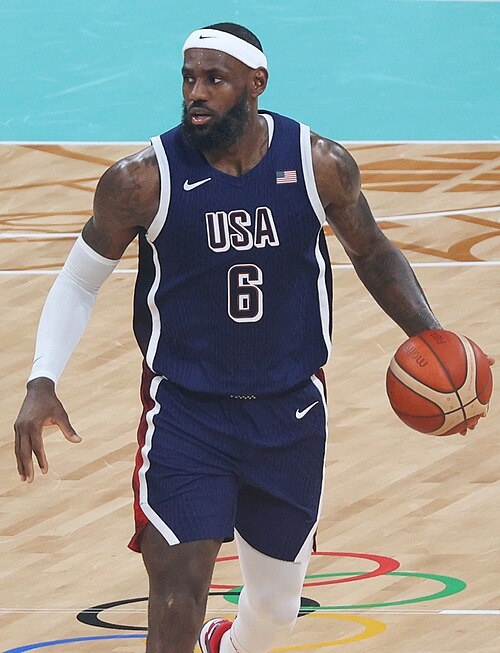

戰術影片庫
OFFENSE · DEFENSE · COMBO由老師挑選的戰術示範影片，全班看到的都是同一份清單。
const VIDEO_LIBRARY = [...] 的位置取代原本內容，重新上傳到網站後，全班就會看到新的清單。
角色選擇
選擇你在球場上的位置與在課堂研究中的角色，AI 助教會依此調整戰術提問的角度。
球場位置
團隊角色
球場位置功能與代表球星
每個位置的職責在現代籃球中都在演變，這裡列出的是最基礎、最常被引用的功能定位，搭配一位現役 NBA 球星作為範例。 五位都已經換成真人照片；LeBron James 是你自己提供的 2024 奧運會照片（維基共享資源），其餘四位來源同樣是維基共享資源的公開授權照片。

控球後衛（1號位）
球隊的場上指揮官，負責運球推進、閱讀防守、分配球權、掌控進攻節奏，通常也是助攻與失誤控制的關鍵角色。
代表球星：Stephen Curry（Golden State Warriors）
得分後衛（2號位）
主要得分手之一，需具備外線投射與持球單打能力，並在無球跑動中找到出手空間；防守端常負責盯防對方主力得分後衛。
代表球星：Anthony Edwards（Minnesota Timberwolves）
小前鋒（3號位）
場上最全面的位置，兼具外線投射、切入得分與協防換防能力，攻守兩端都需要高度的運動能力與位置彈性。
代表球星：LeBron James
大前鋒（4號位）
傳統上負責禁區卡位、籃板保護與內線得分；現代籃球中也有愈來愈多大前鋒具備外線投射能力（俗稱 Stretch 4），能拉開空間。
代表球星：Kevin Durant（Houston Rockets）
中鋒（5號位）
球隊禁區的核心，負責卡位、籃板保護、阻攻與低位單打，防守端往往是最後一道防線。
代表球星：Victor Wembanyama（San Antonio Spurs）我的比賽片段
輸入小隊成員與球場位置，並上傳 3 段比賽片段作為作業繳交。每段限制 24 秒以內，聚焦單一進攻回合的戰術決策。
小隊成員名單
名單會用來命名雲端硬碟資料夾（以頓號、區隔）。第一次上傳後，之後修改名單只會「重新命名」同一個資料夾，不會另外產生新資料夾。
Google 雲端硬碟連接
連接後，3 段影片會上傳到以「小隊成員姓名（頓號區隔）」命名的資料夾中，老師可直接在雲端硬碟收作業。
提醒：影片仍會存在「學生自己」的雲端硬碟裡（因為是用學生的帳號授權上傳），系統只是自動把資料夾分享給老師， 老師可以在自己雲端硬碟的「與我共用」找到所有小隊的資料夾，不需要學生手動分享。
提醒：影片會直接從你的瀏覽器上傳到你（或老師）授權的 Google 帳號雲端硬碟，此頁面本身不會保存影片檔案。若未連接雲端硬碟，片段仍可在本機預覽並確認長度是否符合規定。
AI 後設認知助教
助教不會給你答案，而是用提問帶你自己想清楚。
① 現在是哪一種時機？
事情還沒發生：賽前、暫停時、回合開始前
- 我觀察到對手有什麼線索？
- 我預測接下來會發生什麼？
- 我打算怎麼做？為什麼？
例：對方中鋒很會護框，我想先預判……
事情已經發生：戰術被破、當下卡住、結果不如預期
- 剛剛實際發生了什麼？
- 和我原本預期的差在哪裡？
- 下次我要怎麼調整？
例：擋拆後對方直接換防，我愣住了……
② 用自己的話寫下情境
查看提示詞內容
④ 把對話貼回來
每一輪都貼回來：你說的話和 AI 的回覆分開加入，族譜才看得出你的思考路徑。
⑤ 我的思考族譜
把累積的對話交給 ChatGPT 整理，看見自己的思考路徑：用了哪些後設認知策略、在哪裡卡住、AI 的哪個提問讓你往前推進。
查看分析提示詞內容
ChatGPT 直接畫成圖、沒有給文字？
在那則回覆的程式碼區塊上方按「Copy code」；找不到的話，跟 ChatGPT 說「請用純文字的程式碼區塊再給我一次」。
會放進「03 我的比賽片段」的小隊資料夾，並分享給老師。
籃球規則與裁判法
FIBA OFFICIAL國際籃球總會（FIBA）已公布 2026 年版官方規則，自 2026 年 10 月 1 日起生效；在此之前，2024 年版規則（2024/10/1 生效）仍是現行版本。 以下同時提供兩個版本的官方原文文件，建議課程討論戰術合法性時，依照上課當下實際生效的版本為準。
FIBA 正式籃球規則 2026（即將生效）
2026 年版官方規則全文，自 2026 年 10 月 1 日起正式生效，是最新一版的官方文件。
開啟 2026 規則 PDFFIBA 正式籃球規則 2024（現行版本）
完整規則條文（含比賽規則與器材規格兩部分），2024/10/1 生效，2026/9/30 前仍是現行有效版本。
開啟 2024 規則 PDFFIBA 官方規則總覽頁
FIBA 官方網站的規則專區，可查詢各語言版本、規則解釋文件（Interpretations）與歷年修訂紀錄，是版本更新時最準確的查詢起點。
前往官方規則頁若 FIBA 之後再公布更新版本，請以「FIBA 官方規則總覽頁」上的最新文件為準。
中華民國籃球協會｜C 級教練證與裁判證資訊
台灣的籃球教練與裁判分為 C、B、A 三級，由中華民國籃球協會依「特定體育團體建立運動教練（裁判）資格檢定及管理辦法」辦理講習與檢定。 以下是近年（114 年度，即西元 2025 年）官方公告的實施計畫，列出資格條件、課程時數與費用，實際場次、日期請以協會最新公告為準。
C 級教練資格檢定實施計畫
資格：年滿 20 歲以上；C 級教練講習時數至少 24 小時（學科＋術科），通過測驗後取得證照，證照有效期 4 年。
開啟教練檢定計畫 PDFC 級裁判資格檢定實施計畫
資格：高級中等以上學校畢業，熟悉比賽規則；費用 C 級裁判講習會新臺幣 3,000 元整，另有體能測驗（20 公尺折返跑）與筆試（70 分及格）。
開啟裁判檢定計畫 PDF提醒：講習會場次、費用每年可能微調，上面兩份 PDF 是 114 年度（2025 年）的公告版本，報名前請務必到協會官網確認當年度最新實施計畫。
裁判基本手勢示範（真人影片）
手勢用文字或畫圖都很難呈現真正的動作節奏，所以這裡直接放真人示範的教學影片，可以看到完整的連貫動作，比任何示意圖都清楚。
FIBA 官方手勢完整示範（含跳球、得分、犯規、違例等全套手勢）
REFEREE SIGNALS看完影片後，可以對照下面的文字重點快速複習每個手勢代表的意思：
官方裁判法文件（中華民國籃球協會編譯）
沒有找到現成的簡報檔，但找到更完整的資料：中華民國籃球協會官方翻譯的 FIBA 裁判手冊全文 PDF， 其中「個人執法技巧」那份的第三章就是「官方裁判手號」專章，內容比簡報更完整、更權威，適合裁判證照課程使用。
這些文件由中華民國籃球協會編譯自 FIBA 原文教材，存放於協會的線上文件系統，若連結失效，可能是協會調整了檔案路徑，建議改到協會官網或裁判委員會頁面查詢最新版本。